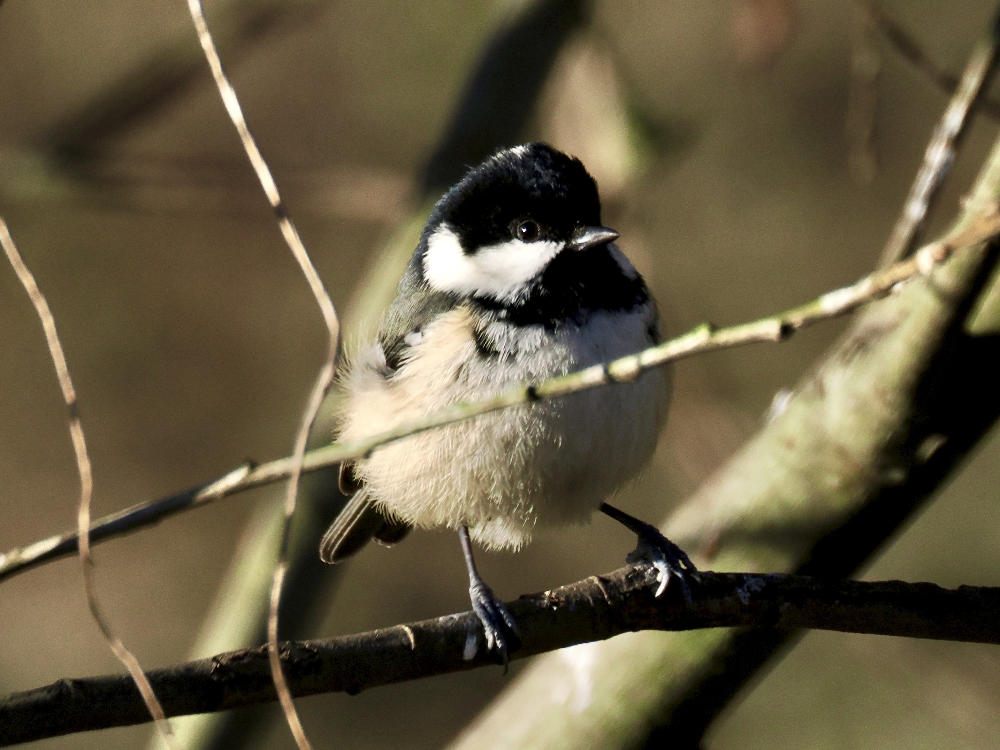
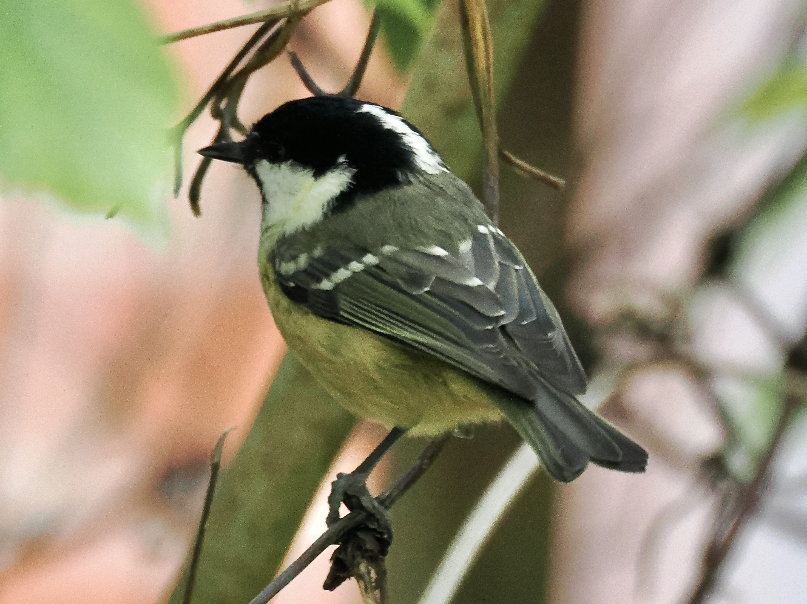

Coal Tit
Periparus ater
Order: Passeriformes
Family: Paridae

Small tit with a black head and white cheeks. Back is greyish. Belly is pale and lacks any stripes.

Has white wing bars and a white vertical stripe on the back of the head. Shy and uncommon to the garden. I find them most abundant in coniferous forests, among Goldcrest.